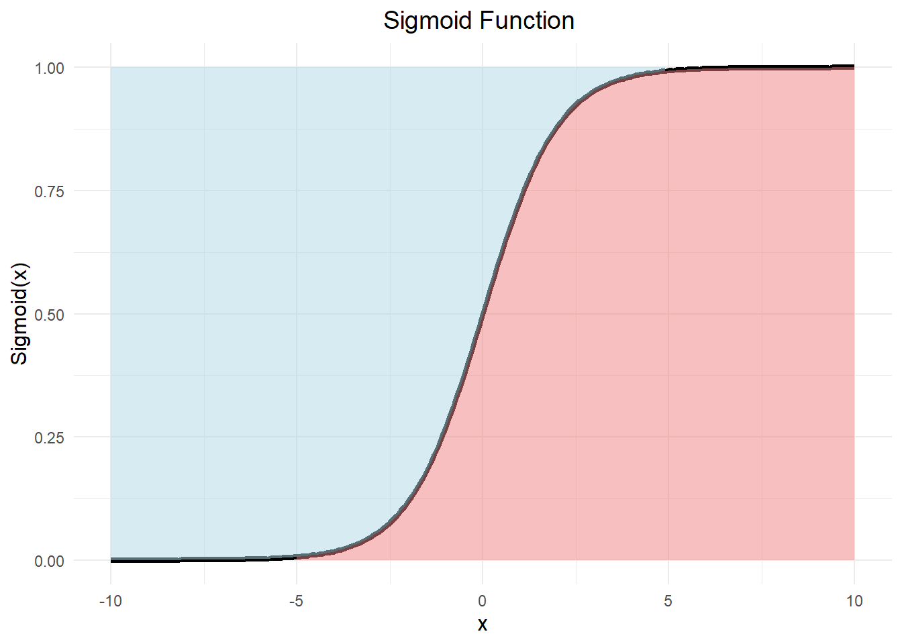

Let’s suppose that we have two kind of plant that we have to divide into two classes: toxic plants represented by class 0 and healthy plants represented by class 1. Each plant has his characteristics X1 and X2. The following table show us what it is about:
As we can see, we can provide a line that can separate the two kinds of plant. This line is the decision boundary. So we’re able to develop a model, based on this line to predict the class of a new plant.
To develop the model, we need to know the equation of the line that separate accuratly the two plants. To achieve this, we’ll develop a linear model by sending X1 and X2 to a neuron, adding a coefficient W, respectively W1 and W2 and what we call the bias b. It’ll lead us to :
\[ z(X1,X2)= W1*X1 + W2*X2 + b \]
The boundary line is the value for which \(Z(X_1,X_2)=0\) So by posing \(Z(X_1,X_2)=0\), we can find the expression of the equation of the boundary line. To predict a class for a new plant, we have to set the parameters \(W_1\), \(W_2\) and \(b\) to separe in the best way the two class and after that we will be able to send a new plant according to the sign of the \(Z\) computed. Now, to improve this model, one of the best thing that we can do is to add probabilities. The further the plant is from the line, the greater the chance that it belongs to this class. In this context, we use an activation function that returns a value close to 0 or 1 as we move away from the line. Generally we use the sigmoiid fonction.
The sigmoid
The sigmoid function is one of the most common activation functions in artificial neural networks, especially in simpler or shallow models. It maps any real-valued number to a range between 0 and 1, making it particularly useful for binary classification problems.
The sigmoid function\(a(Z)\) is defined as:
\(a(Z) = \frac{1}{1 + e^{-Z}}\)
Where:
\(e\) is the base of the natural logarithm (approximately 2.718).
\(Z\) is the input to the function, which can be any real number.
The graph of the sigmoid function has an S-shape (sigmoid curve) and is asymptotic to both 0 and 1 for extreme values of ( x ).
Code
library(ggplot2)# Define sigmoid functionsigmoid <-function(x) {return(1/ (1+exp(-x)))}x_values <-seq(-10, 10, by =0.1)y_values <-sigmoid(x_values)# Create a data frame for plottingdata <-data.frame(x = x_values, y = y_values)# Plot the sigmoid curve with color differentiation for both the curve and area under itggplot(data, aes(x = x, y = y)) +geom_line(size =1.5, color ="black") +# Black line for sigmoid curvegeom_ribbon(data =subset(data, x <5), aes(ymin = y, ymax =1), fill ="lightblue", alpha =0.5) +# Light blue for the left part under and on the curvegeom_ribbon(data =subset(data, x >=-5 ), aes(ymin =0, ymax = y), fill ="lightcoral", alpha =0.5) +# Light red for the right part under the curvelabs(title ="Sigmoid Function ", x ="x", y ="Sigmoid(x)") +theme_minimal() +theme(axis.title =element_text(size =12), plot.title =element_text(size =14, hjust =0.5))

The Cost Function
To find the best model, we need to minimize the error between the predictions and the real values. This process involves using the sigmoid function to derive probabilities, leveraging the Bernoulli probability function, and defining the likelihood and log-likelihood functions, that we call the log-loss function which is defined as \[\ell(W_1, W_2, b) = -1/n[\sum_{i=1}^n \left[ Y_i \cdot \log(a(z_i)) + (1 - Y_i) \cdot \log(1 - a(z_i)) \right]]\]
Let us have a better view on how we got this. The likelihood function measures how well the model predicts the entire dataset. To find it, we can just make the product of all the probabilities that we compute using the sigmoid function for each plants. For ( n ) observations, it is defined as:
\[L(W_1, W_2, b) = \prod_{i=1}^n P(Y_i|X_i)\]
S
\[P(Y_i|X_i)\]
The sigmoid function transforms a linear combination of features into probabilities, defined as: \(a(z) = \frac{1}{1 + e^{-z}}\)
where:
\(z = W_1 \cdot X_1 + W_2 \cdot X_2 + b\)
Here, \(W_1\) , \(W_2\), and \(b\) are the parameters of the model, and \(X_1\), \(X_2\) are the input features.
The Bernoulli distribution models the likelihood of binary outcomes \(Y \in \{0, 1\}\). The probability for a single observation is:
\(P(Y|X) = a(z)^Y \cdot (1 - a(z))^{1-Y}\) where: \(a(z)\) is the predicted probability of \(Y = 1\), \(1 - a(z)\) is the predicted probability of \(Y = 0\)
Substituting the Bernoulli probability function, the likelihood becomes:
If the result of this calculation is 0.99, for example, this means that our model is 99% plausible. Conversely, if the result is close to 0, it would mean that our model is highly implausible. Let us apply it to our data
Let’s remark that the likelihood is very low. Can we really deduce that the model is’nt likely?. Imagine that we have more than 10000 lines. The product of all the probability can lead to a number extremely close to 0, at some point, the machine will no longer be able to store the value. That’s why we use the log-likelihood.
Log-Likelihood Function
To simplify computation and avoid numerical underflow, we use the log-likelihood, which is the natural logarithm of the likelihood:
In fact, the log function is monotonically increasing. It therefore preserves order. This means that \(a<b\) implies that \(log(a)<log(b)\) Meaning that to maximize the likelyhood of the model, we just need to maximize the log-likelihood.
Generally, it can be a little bit difficult to maximise a mathematical function. So by multiplying the log like lihood by (-), our aim will be the minimisation of the loglikelihood function . maximising \(f(x)\) is equal to minimise \(-f(x)\)
We addd also the term 1/N to normalise our answer. This is how the log loss function is gotten.
And there you have it, you now know where cost fomction comes from. Now we’re going to use the cost funcion to minimise the errors of the model, using the Gradient descent.
Gradient descent
Gradient Descent is an optimization algorithm used to minimize a function by iteratively moving towards the minimum value of the function. In machine learning, this function is typically the cost function (or loss function), which measures how well the model is performing. The goal of gradient descent is to find the parameters (e.g., weights in a linear regression model) that minimize this cost function.
Let’s be \(∇J(θ) =\ell(W_1, W_2, b)\)
The gradient is the vector of partial derivatives of the cost function with respect to each parameter.
It points in the direction of the steepest ascent of the function. To minimize the function, we move in the opposite direction of the gradient. There is a hyperparameter that controls the step size of each iteration, this is the Learning Rate (α): Too small: Slow convergence.
Too large: Risk of overshooting the minimum.
Update Rule:
The parameters are updated iteratively using the formula: \[θ_j = θ_j - α * (∂J(θ)/∂θ_j)\]
This is repeated until convergence (i.e., when the change in the cost function is very small).
Let’s define this function for our data and try to visualise the learning with a 3D plot.
In red, we can see all the point that the algo goes through. Don’t forget that we want the minimum of ths function. The function seems to be convexe. Let’s extract the parameters corresponding to the min lost.
iter W1 W2 b loss
50 50 -1.245517 1.193115 0.1633958 0.160078
Using this process the final line can be adjust like this
Code
# Generate Decision Boundaries Over Iterationsanimated_plot <-ggplot() +geom_point(data = data, aes(x = x1, y = x2, color = y), size =3) +transition_time(history$iter) +labs(title ="Iteration: {frame_time}", x ="X1", y ="X2") +geom_abline(data = history, aes(intercept =-b/W2, slope =-W1/W2), color ="black")# Animateanimate(animated_plot, nframes =50, fps =10, duration =15)
Now to classify new data, we just have to compute the probability associated using the value of the variable and the parameters computed. If the probability is greater than 0.5, the new data belongs to the class 1, otherwise, it belongs to the class 0
Thank you for yor attention. I hope it was helpful!!!!!!!!
Source Code
---title: "Hands-on"---Let's start with an example.Let's suppose that we have two kind of plant that we have to divide into two classes: **toxic** plants represented by class **0** and **healthy** plants represented by class **1**. Each plant has his characteristics **X1** and **X2**. The following table show us what it is about:| Y |$(X_1)$ | $(X_2)$||----|---|---|| 1 |0.5| 2 || 1 |1.1|2.1|| 1 |0.7|2.6|| 1 |2 | 1 || 1 |2.5|0.7|| 1 |2.2|0.3|Let' us have a better look with a graphic```{r , warning=FALSE, message=FALSE}library(ggplot2)x1= c(0.5,1.1,0.7,2,2.5,2.2)x2=c(2,2.1,2.6,1,0.7,0.3)y= factor(c(1,1,1,0,0,0), levels=c(0,1))Y=factor(y)data= data.frame(cbind(y,x1,x2) ) ggplot(data = data, aes(x = x1, y = x2)) + geom_point(aes(colour = Y), size = 3) + scale_colour_manual(values = c("red", "green")) + theme_minimal()```As we can see, we can provide a line that can separate the two kinds of plant. This line is **the decision boundary**. So we're able to develop a model, based on this line to predict the class of a new plant.```{r , warning=FALSE, message=FALSE }library(ggplot2)x1= c(0.5,1.1,0.7,2,2.5,2.2,1.5)x2=c(2,2.1,2.6,1,0.7,0.3,0.5)y= factor(c(1,1,1,0,0,0,2), levels=c(0,1,2))Y=factor(y)data= data.frame(cbind(y,x1,x2) ) ggplot(data = data, aes(x = x1, y = x2)) + geom_point(aes(colour = Y), size = 3) + scale_colour_manual(values = c("red", "green", "blue")) + geom_abline(slope = 0.9, intercept = 0.1, colour = "black", size = 1.2) + # Boundary line labs(title = "Data separation", x = "x1", y = "x2") + theme_minimal()```### The modelTo develop the model, we need to know the equation of the line that separate accuratly the two plants. To achieve this, we'll develop a linear model by sending **X1** and **X2** to a neuron, adding a coefficient **W**, respectively **W1** and **W2** and what we call the bias **b**. It'll lead us to :$$ z(X1,X2)= W1*X1 + W2*X2 + b $$The boundary line is the value for which $Z(X_1,X_2)=0$ So by posing $Z(X_1,X_2)=0$, we can find the expression of the equation of the boundary line.To predict a class for a new plant, we have to set the parameters $W_1$, $W_2$ and $b$ to separe in the best way the two class and after that we will be able to send a new plant according to the sign of the $Z$ computed. Now, to improve this model, one of the best thing that we can do is to add probabilities. The further the plant is from the line, the greater the chance that it belongs to this class. In this context, we use an **activation function** that returns a value close to 0 or 1 as we move away from the line. Generally we use the sigmoiid fonction.### The sigmoidThe **sigmoid function** is one of the most common activation functions in artificial neural networks, especially in simpler or shallow models. It maps any real-valued number to a range between **0 and 1**, making it particularly useful for binary classification problems.The **sigmoid function** $a(Z)$ is defined as:$a(Z) = \frac{1}{1 + e^{-Z}}$Where:- $e$ is the base of the natural logarithm (approximately 2.718).- $Z$ is the input to the function, which can be any real number.The graph of the sigmoid function has an **S-shape** (sigmoid curve) and is asymptotic to both 0 and 1 for extreme values of \( x \). ```{r , warning=FALSE, message=FALSE}library(ggplot2)# Define sigmoid functionsigmoid <- function(x) { return(1 / (1 + exp(-x)))}x_values <- seq(-10, 10, by = 0.1)y_values <- sigmoid(x_values)# Create a data frame for plottingdata <- data.frame(x = x_values, y = y_values)# Plot the sigmoid curve with color differentiation for both the curve and area under itggplot(data, aes(x = x, y = y)) + geom_line(size = 1.5, color = "black") + # Black line for sigmoid curve geom_ribbon(data = subset(data, x < 5), aes(ymin = y, ymax = 1), fill = "lightblue", alpha = 0.5) + # Light blue for the left part under and on the curve geom_ribbon(data = subset(data, x >=-5 ), aes(ymin = 0, ymax = y), fill = "lightcoral", alpha = 0.5) + # Light red for the right part under the curve labs(title = "Sigmoid Function ", x = "x", y = "Sigmoid(x)") + theme_minimal() + theme(axis.title = element_text(size = 12), plot.title = element_text(size = 14, hjust = 0.5))```### The Cost FunctionTo find the best model, we need to minimize the error between the predictions and the real values. This process involves using the sigmoid function to derive probabilities, leveraging the Bernoulli probability function, and defining the likelihood and log-likelihood functions, that we call the log-loss function which is defined as$$\ell(W_1, W_2, b) = -1/n[\sum_{i=1}^n \left[ Y_i \cdot \log(a(z_i)) + (1 - Y_i) \cdot \log(1 - a(z_i)) \right]]$$Let us have a better view on how we got this.The likelihood function measures how well the model predicts the entire dataset. To find it, we can just make the product of all the probabilities that we compute using the sigmoid function for each plants. For \( n \) observations, it is defined as:$$L(W_1, W_2, b) = \prod_{i=1}^n P(Y_i|X_i)$$S$$P(Y_i|X_i)$$The sigmoid function transforms a linear combination of features into probabilities, defined as:$a(z) = \frac{1}{1 + e^{-z}}$where:$z = W_1 \cdot X_1 + W_2 \cdot X_2 + b$Here, $W_1$ , $W_2$, and $b$ are the parameters of the model, and $X_1$, $X_2$ are the input features.The Bernoulli distribution models the likelihood of binary outcomes $Y \in \{0, 1\}$. The probability for a single observation is:$P(Y|X) = a(z)^Y \cdot (1 - a(z))^{1-Y}$where: $a(z)$ is the predicted probability of $Y = 1$, $1 - a(z)$ is the predicted probability of $Y = 0$Substituting the Bernoulli probability function, the likelihood becomes:$$L(W_1, W_2, b) = \prod_{i=1}^n \left[ a(z_i)^{Y_i} \cdot (1 - a(z_i))^{1-Y_i} \right]$$If the result of this calculation is 0.99, for example, this means that our model is 99% plausible. Conversely, if the result is close to 0, it would mean that our model is highly implausible. Let us apply it to our data```{r , echo=FALSE, warning=FALSE, message=FALSE}# DataX1 <- c(0.5, 1.1, 0.7, 2.0, 2.5, 2.2)X2 <- c(2.0, 2.1, 2.6, 1.0, 0.7, 0.3)Y <- c(1, 1, 1, 0, 0, 0)# Design matrixX <- cbind(X1, X2, 1) # Add a column of 1s for the bias termsvd_decomp <- svd(X)U <- svd_decomp$uD <- diag(svd_decomp$d)V <- svd_decomp$vtheta <- V %*% solve(D) %*% t(U) %*% Y# Extract W1, W2, and bW1 <- -1W2 <- 1b <- 0.1```The probability are:```{r , echo=FALSE, warning=FALSE, message=FALSE}Z=W1 * X[,1] + W2* X[,2]+ bsigmo<-function(a) {1/(1+exp(-a))}s<-data.frame(Probability=sigmo(Z))s``````{r , echo=FALSE, warning=FALSE, message=FALSE}L= prod(s)Llibrary(ggplot2)x1= c(0.5,1.1,0.7,2,2.5,2.2)x2=c(2,2.1,2.6,1,0.7,0.3)y= factor(c(1,1,1,0,0,0), levels=c(0,1))Y=factor(y)data= data.frame(cbind(y,x1,x2) ) ggplot(data = data, aes(x = x1, y = x2)) + geom_point(aes(colour = Y), size = 3) + scale_colour_manual(values = c("red", "green")) + geom_abline(slope = 1, intercept = 0.1, colour = "black", size = 1.2)+ # Boundary line labs(title = "Data separation", x = "x1", y = "x2") + theme_minimal()```The likelihood value is `0.003482233`.In fact, this is the prduct of probability$L= 0.8320184 * 0.7502601 * 0.8807971 * 0.2890505 * 0.1544653 * 0.1418511$Let's remark that the likelihood is very low. Can we really deduce that the model is'nt likely?. Imagine that we have more than 10000 lines. The product of all the probability can lead to a number extremely close to 0, at some point, the machine will no longer be able to store the value.That's why we use the log-likelihood.**Log-Likelihood Function**To simplify computation and avoid numerical underflow, we use the log-likelihood, which is the natural logarithm of the likelihood:$$\ell(W_1, W_2, b) = \log L(W_1, W_2, b)$$Expanding this, we get:$$\ell(W_1, W_2, b) = \sum_{i=1}^n \left[ Y_i \cdot \log(a(z_i)) + (1 - Y_i) \cdot \log(1 - a(z_i)) \right]$$In fact, the log function is monotonically increasing. It therefore preserves order. This means that $a<b$ implies that $log(a)<log(b)$Meaning that to maximize the likelyhood of the model, we just need to maximize the log-likelihood.```{r , echo=FALSE, warning=FALSE, message=FALSE}library(ggplot2)library(gridExtra)# Define the likelihood function and log-likelihood function for a normal distributionlikelihood_function <- function(mu, sigma, x) { prod(dnorm(x, mean = mu, sd = sigma))}log_likelihood_function <- function(mu, sigma, x) { sum(dnorm(x, mean = mu, sd = sigma, log = TRUE))}# Sample data (you can replace this with your actual data)set.seed(123)x <- rnorm(100, mean = 0, sd = 1)# Define a range of parameter values to plotmu_values <- seq(-3, 3, length.out = 100)sigma_values <- 1 # Fixed standard deviation# Compute the likelihood and log-likelihood for each value of mulikelihood_values <- sapply(mu_values, function(mu) likelihood_function(mu, sigma_values, x))log_likelihood_values <- sapply(mu_values, function(mu) log_likelihood_function(mu, sigma_values, x))# Create the likelihood plotlikelihood_plot <- ggplot(data.frame(mu = mu_values, value = likelihood_values), aes(x = mu, y = value)) + geom_line(color = "blue", size = 1.2) + labs(title = "Likelihood Function", x = expression(mu), y = "Likelihood") + theme_minimal()# Create the log-likelihood plotlog_likelihood_plot <- ggplot(data.frame(mu = mu_values, value = log_likelihood_values), aes(x = mu, y = value)) + geom_line(color = "red", size = 1.2) + labs(title = "Log-Likelihood Function", x = expression(mu), y = "Log-Likelihood") + theme_minimal()# Arrange the plots side by side using gridExtragrid.arrange(likelihood_plot, log_likelihood_plot, ncol = 2) ```Generally, it can be a little bit difficult to maximise a mathematical function. So by multiplying the log like lihood by (-), our aim will be the minimisation of the loglikelihood function .maximising $f(x)$ is equal to minimise $-f(x)$```{r , echo=FALSE, warning=FALSE, message=FALSE}# Load required librarylibrary(ggplot2)# Define the log-likelihood function for a normal distributionlog_likelihood_function <- function(mu, sigma, x) { sum(dnorm(x, mean = mu, sd = sigma, log = TRUE))}# Sample data (you can replace this with your actual data)set.seed(123)x <- rnorm(100, mean = 0, sd = 1)# Define a range of parameter values to plotmu_values <- seq(-3, 3, length.out = 100)sigma_values <- 1 # Fixed standard deviation# Compute the log-likelihood and negative log-likelihood for each value of mulog_likelihood_values <- sapply(mu_values, function(mu) log_likelihood_function(mu, sigma_values, x))negative_log_likelihood_values <- -log_likelihood_values# Find the maximum of log-likelihood and the minimum of negative log-likelihoodmax_log_likelihood <- max(log_likelihood_values)max_mu <- mu_values[which.max(log_likelihood_values)]min_negative_log_likelihood <- min(negative_log_likelihood_values)min_mu <- mu_values[which.min(negative_log_likelihood_values)]# Create a data frame for plottingdata <- data.frame( mu = mu_values, log_likelihood = log_likelihood_values, negative_log_likelihood = negative_log_likelihood_values)# Create the plotggplot(data, aes(x = mu)) + geom_line(aes(y = log_likelihood), color = "blue", size = 1.2, linetype = "solid") + geom_line(aes(y = negative_log_likelihood), color = "black", size = 1.2, linetype = "dashed") + geom_point(aes(x = max_mu, y = max_log_likelihood), color = "blue", size = 4, shape = 19) + geom_point(aes(x = min_mu, y = min_negative_log_likelihood), color = "black", size = 4, shape = 19) + annotate("text", x = max_mu, y = max_log_likelihood, label = "Max Log-Likelihood", vjust = -1, color = "blue") + annotate("text", x = min_mu, y = min_negative_log_likelihood, label = "Min -Log-Likelihood", vjust = 1.5, color = "red") + labs(title = "Log-Likelihood and Negative Log-Likelihood Functions", x = expression(mu), y = "Value") + theme_minimal()```We addd also the term 1/N to normalise our answer. This is how the log loss function is gotten.$$\ell(W_1, W_2, b) = -1/n[\sum_{i=1}^n \left[ Y_i \cdot \log(a(z_i)) + (1 - Y_i) \cdot \log(1 - a(z_i)) \right]]$$And there you have it, you now know where cost fomction comes from. Now we're going to use the cost funcion to minimise the errors of the model, using the **Gradient descent**.### **Gradient descent**Gradient Descent is an optimization algorithm used to minimize a function by iteratively moving towards the minimum value of the function. In machine learning, this function is typically the cost function (or loss function), which measures how well the model is performing. The goal of gradient descent is to find the parameters (e.g., weights in a linear regression model) that minimize this cost function.Let's be $∇J(θ) =\ell(W_1, W_2, b)$The gradient is the vector of partial derivatives of the cost function with respect to each parameter.It points in the direction of the steepest ascent of the function. To minimize the function, we move in the opposite direction of the gradient. There is a hyperparameter that controls the step size of each iteration, this is the Learning Rate (α):**Too small**: Slow convergence.**Too large**: Risk of overshooting the minimum.Update Rule:The parameters are updated iteratively using the formula:$$θ_j = θ_j - α * (∂J(θ)/∂θ_j)$$This is repeated until convergence (i.e., when the change in the cost function is very small).Let's define this function for our data and try to visualise the learning with a 3D plot.```{r , echo=FALSE, warning=FALSE, message=FALSE}library(ggplot2)library(gganimate)library(plotly)library(dplyr)# Datax1 <- c(0.5,1.1,0.7,2,2.5,2.2)x2 <- c(2,2.1,2.6,1,0.7,0.3)y <- factor(c(1,1,1,0,0,0), levels=c(0,1))data <- data.frame(y, x1, x2)# Sigmoid functionsigmoid <- function(z) { return(1 / (1 + exp(-z)))}# Logistic loss functionlogistic_loss <- function(W, data) { z <- W[1] * data$x1 + W[2] * data$x2 + W[3] a <- sigmoid(z) y <- as.numeric(as.character(data$y)) # Convert factor to numeric loss <- -mean(y * log(a) + (1 - y) * log(1 - a)) return(loss)}# Gradient Descentgradient_descent <- function(data, lr = 0.1, epochs = 50) { W <- c(runif(1), runif(1), runif(1)) # Random initialization history <- data.frame(iter = integer(), W1 = numeric(), W2 = numeric(), b = numeric(), loss = numeric()) for (i in 1:epochs) { z <- W[1] * data$x1 + W[2] * data$x2 + W[3] a <- sigmoid(z) y <- as.numeric(as.character(data$y)) # Compute gradients dW1 <- mean((a - y) * data$x1) dW2 <- mean((a - y) * data$x2) db <- mean(a - y) # Update parameters W[1] <- W[1] - lr * dW1 W[2] <- W[2] - lr * dW2 W[3] <- W[3] - lr * db # Store history history <- rbind(history, data.frame(iter = i, W1 = W[1], W2 = W[2], b = W[3], loss = logistic_loss(W, data))) } return(history)}# Run Gradient Descenthistory <- gradient_descent(data, lr = 0.10, epochs = 50)# Generate 3D Loss Function SurfaceW1_seq <- seq(-3, 3, length.out = 30)W2_seq <- seq(-3, 3, length.out = 30)grid <- expand.grid(W1 = W1_seq, W2 = W2_seq)grid$Loss <- apply(grid, 1, function(w) logistic_loss(c(w[1], w[2], 0), data))# Create 3D Loss Function Plotloss_plot <- plot_ly(x = grid$W1, y = grid$W2, z = grid$Loss, type = "mesh3d", colorscale = "Viridis") %>% layout(scene = list(xaxis = list(title = "W1"), yaxis = list(title = "W2"), zaxis = list(title = "Loss Function")))# Add Gradient Descent Pathloss_plot <- loss_plot %>% add_trace(x = history$W1, y = history$W2, z = history$loss, type = "scatter3d", mode = "lines+markers", marker = list(size = 4, color = "red"), line = list(width = 5, color = "red"))# Show the 3D animated plotloss_plot```In red, we can see all the point that the algo goes through. Don't forget that we want the minimum of ths function. The function seems to be convexe. Let's extract the parameters corresponding to the min lost.```{r}min_lost <- history[which.min(history$loss), ]print(min_lost)```Using this process the final line can be adjust like this```{r}# Generate Decision Boundaries Over Iterationsanimated_plot <-ggplot() +geom_point(data = data, aes(x = x1, y = x2, color = y), size =3) +transition_time(history$iter) +labs(title ="Iteration: {frame_time}", x ="X1", y ="X2") +geom_abline(data = history, aes(intercept =-b/W2, slope =-W1/W2), color ="black")# Animateanimate(animated_plot, nframes =50, fps =10, duration =15)```Now to classify new data, we just have to compute the probability associated using the value of the variable and the parameters computed. If the probability is greater than 0.5, the new data belongs to the class 1, otherwise, it belongs to the class 0Thank you for yor attention. I hope it was helpful!!!!!!!!